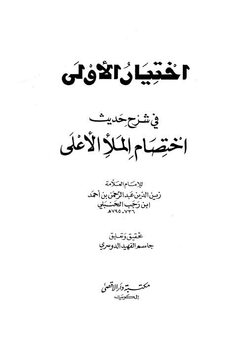

Downloads need an internet connection.
اختيار الأولى في شرح حديث اختصام الملأ الأعلى
Authors: ابن رجب الحنبلي
Editors: جاسم الفهيد الدوسري
Publishers: مكتبة دار الأقصى
**▫️ العنوان: اختيار الأولى في شرح حديث اختصام الملأ الأعلى** ▪️ المؤلف: #عبد_الرحمن_بن_أحمد_بن_رجب_الحنبلي ▫️ المحقق: #جاسم_الفهيد_الدوسري ▪️ الناشر: #مكتبة_دار_الأقصى ▫️ تاريخ النشر: 1406هـ 1985م ▪️ بلد النشر: حولي، #الكويت ▫️ الطبعة: 1 ▪️ عدد الأجزاء: 1 ▫️ الصفحات: 144 ▪️ نوع الوعاء: #كتاب ▫️ التصنيف الرئيسي: #الحديث_وعلومه ▪️ التصنيف الفرعي: #شروحات ۪